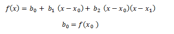
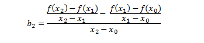

Métodos de interpolación
Con frecuencia se encontrará con que tiene que estimar valores intermedios entre puntos asociados con datos. El método más común que se usa para este propósito es la interpolación polinomial. Dados n + 1 puntos asociados con datos, hay uno y sólo un polinomio de grado n que pasa a través de todos los puntos. Aunque hay uno y sólo un polinomio de n-ésimo grado que se ajusta a n + 1 puntos, existe una gran variedad de formas matemáticas en las cuales puede expresarse este polinomio.
Interpolación polinomial de Newton
Es un método de interpolación polinómica, con que solo existe un único polinomio que interpola una serie de puntos. Existen diferentes formas de calcularlo, este método es útil para situaciones que requiera un numero bajo de puntos para interpolar, ya que a medida que cree el número de puntos también lo hace el grado de polinomios. Existen ciertas ventajas en el uso de este polinomio respecto al polinomio interpolado. En el caso particular de la interpolación de newton se logra aproximar un valor de la función f(x) en un valor desconocido de x. El caso particular para que una interpolación sea lineal es en el que se utiliza un polinomio de interpolación de grado 1, que se ajuste a los valores en los puntos XO y X1 las formas más simples de interpolación consiste en unir dos puntos asociados con una línea recta, dicha técnica llamada interpolación lineal en donde ilustra si la interpolación polinomio sea de grado 1, que une dos puntos; sea de grado dos que une a tres puntos y el de grado 3 que une a 4 puntos.

Interpolación cuadrática
En este método si se tienen 3 puntos asociados con datos, estos pueden ajustarse en un polinomio de segundo grado (también conocido como polinomio cuadrático o parábola). Una forma particularmente conveniente es aplicar para llar el método matemático es la aplicación de la siguiente formula: f (x) = b0 + b1 ( x – x0 ) + b2 ( x – x0 ) (x – x1) El procedimiento simple puede usarse para determinar los valores de los coeficientes. Para encontrar b0 se evalúa con x = x0 y por lo tanto obtenemos lo siguiente:
después se evalúa en x = x1 para obtener lo siguiente:
y por último se evalúa en x = x2 por lo tanto se hallará el valor de b2 con la siguiente forma:

Derechos reservados, ITV